直近1週間の人気フィード
はてなブックマーク数を元に新着優先で並べ替え
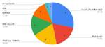
技術系の最新情報ってどこから得てますか？ 605
605 KAYAC Engineers' Blog
KAYAC Engineers' Blog
面白法人グループ Advent Calendar 2024の6日目の記事です。カヤック社内のエンジニアが、どこから情報を得ているのか気になったのでアンケートしてみました。
3日前

SSHでも二要素認証を使いたい 215 IIJ Engineers Blog
IIJ Engineers Blog
【IIJ 2024 TECHアドベントカレンダー 12/6の記事です】 今年のIIJアドベントカレンダーは「運用」がテーマということなので、運用に欠かせない必携ツール筆頭であるSSHを取り上げ、SSH...
3日前

長い処理には通知音コマンドを仕込んでおくと捗るぞ 407 Magic Moment Tech Blogさんのフィード
Magic Moment Tech Blogさんのフィード
こんにちは！Magic Moment フロントエンドエンジニアの @morishin です。この記事は、Magic Moment Advent Calendar 2024 4 日目の記事です。 はじめに 開発あるある皆さん開発をしていて、コマンドの "待ち" が長いとき、こんな経験はありませんか。「ビルドに時間がかかるなぁ」(別の作業をする)「もう終わったかな (ﾀｰﾐﾅﾙﾁﾗｰ」「まだかー」(以降無限ループ)作業に集中できない！逆に「このインストール時間かかるなぁ」「終わるまでちょっと休憩しようかな (ｽﾔｧ」〜3 時間後〜「...あっ、いつの間に...
4日前
freeeで1年間働いてわかった「ふつう」のアクセシビリティ 83 freee Developers Hub
freee Developers Hub
はじめまして！ shikakun といいます。freeeのデザインシステムの開発に携わっている、ソフトウェアデザイナーです。2024年1月に中途採用で入社しました。 freeeで働くことを決めた理由のひとつは、freeeがアクセシビリティの向上に積極的に取り組んでいる印象を持っていたからでした。アクセシビリティとは、「（製品やサービスを）利用できること、またはその到達度」という意味で使われる言葉です。障害の有無に関わらず、さまざまな性質を持つ誰もが、どのような環境であっても利用できるインターフェースをつくることは、ソフトウェアの開発者として任意ではなく必須の責務だと考えます。さらに、「だれもが…
1日前
エンジニアになりたかった6年前のわたしへ 80 freee Developers Hub
この記事は freee Developers Advent Calendar 2024 の7日目です。 adventar.org みなさん、こんにちは！freee 外部連携基盤エンジニアのおっそーです。 最近、採用イベントや面接などで、学生の方・社会人の方どちらともお話する機会が増えてきました。その中には、未経験からエンジニアを目指す方やまだ経験が浅い方も多くいらっしゃいます。 わたしは25歳で社会人になると同時に未経験からエンジニアになり、ポテンシャル枠（※自称）でフリーに転職してきましたので、そんな6年間を振り返りつつ、どうやって一人前に近づいてきたかや、フリー*1に来たらどのような成長が…
2日前
MySQL の UPDATE で IN 句の要素が多すぎてデッドロックした話 #LayerXテックアドカレ 75 LayerX エンジニアブログ
LayerX エンジニアブログ
この記事は、LayerX Tech Advent Calendar 2024 の7日目の記事です。 tech.layerx.co.jp こんにちは。バクラクビジネスカード開発チーム エンジニアの iwamatsu です。 何か書くことないかな〜と頭を悩ませていたところ、見たことのない不思議なデッドロックに出くわしたので、今回はそれについて書こうと思います。 実行環境 バージョン: MySQL 8.0.39 ストレージエンジン: InnoDB トランザクション分離レベル: REPEATABLE READ 発生した事象 以下のようなユーザーテーブルがあるとします。 CREATE TABLE `us…
2日前
1000人超えの組織にDifyでチャットボットを導入した話と生成AIアプリで全社の効率化を進めている話 113 Tabelog Tech Blog
Tabelog Tech Blog
目次 目次 はじめに そもそも：Difyとは？ 全社へのチャットボットの導入 OSS版Difyのセットアップ Difyのアプリ作成 導入後に見えてきた問題と現在の施策 施策1. Teamsアプリの提供 📱 施策2: 社内情報の検索 🔍️ 施策3: 汎用アプリ（議事録作成AIアプリ）の提供 📝 今後について はじめに この記事は食べログアドベントカレンダー2024の7日目の記事です☃️。 こんにちは。テクノロジー本部アドバンストテクノロジー部のサービス改善チームに所属している西本です。 株式会社カカクコムでは価格.comをはじめ、食べログ、求人ボックス、スマイティなどの様々なサービスを提供してお…
2日前

ローカル（仮想環境）にBINDをたててdigコマンドを投げてみた 34 iimon TECH BLOG
iimon TECH BLOG
はじめに 環境構築編 インストール 設定 設定の反映 確認編 digコマンドの実行 終わりに はじめに 株式会社iimonの木暮です。 今回は実際に構築した権威サーバへクエリを送ってレスポンスを確認するところまで行います。 今回の記事は、調べれば類似の記事がたくさん見つかるような内容ですが、「百聞は一見に如かず」という言葉を胸に、自分でしっかり手を動かしながら学んだことをまとめました。 本記事では、実際に調べたことや手を動かして試したプロセスを、順を追って整理しています。また、情報をまとめる際に参考にした素晴らしい記事を執筆された方々には心から感謝いたします。この場を借りて御礼申し上げます。 …
2日前

データウェアハウスをRedshiftからSnowflakeに移行するために考えたこと（１） 44 Uzabase for Engineers
Uzabase for Engineers
この記事は NewsPicks Advent Calendar 2024 の6日目の記事です。 ソーシャル経済メディア「NewsPicks」の中村です。最近はデータ基盤の開発運用、データアナリストのサポート、LLM活用等をやっています。 現在、NewsPicksではデータウェアハウスとして長年利用してきたAmazon RedshiftからSnowflakeへの移行を進めています。まだ移行作業の途上ではありますが、完了の目処が立ったので、なぜデータ基盤の移行を行なっているのか、どのように移行計画を立てたか、実際に移行作業を進めてみてどうだったか等を紹介したいと思います。データ基盤を運用している方…
2日前

QAチーム2年目を振り返る（体制編） 44 Nealle Developer's Blog
Nealle Developer's Blog
この記事はニーリーアドベントカレンダー2024の6日目の記事です。 こんにちは、QAチームの関井（@ysekii_）です。最近SwitchbotのCO2センサーを購入し、仕事部屋の快適性を意識し始めました。 昨年の終わりにQAチーム1年目の取り組みについて書きましたが、今年もQAチーム2年目で何をやっていたか振り返りたいと思います。 大きく分類するとQAチームの体制の変化と取り組んだことの2つあるのですが、今回は体制の振り返りをしたいと思います。（QAチームの取り組みの振り返りについては、12/19のアドベントカレンダーで書く予定です） note.nealle.com QAチームの人数推移 ま…
3日前

Cloud Workstations x Terraform で構築するフルマネージド開発環境 25 NTT Communications Engineers' Blog
NTT Communications Engineers' Blog
この記事は、NTT Communications Advent Calendar 2024 7日目の記事です。 こんにちは！イノベーションセンターの外村です。 日頃は twada 塾 と呼ばれる社内向けソフトウェア開発研修を運営しています。最近チームを異動し、 ノーコード・ローコードで 時系列分析 AI を作ることができる Node-AI の開発にもジョインしました。 本記事ではフルマネージド開発環境である Google Cloud の Cloud Workstations についてその特徴と構築方法を述べたいと思います。 はじめに フルマネージド開発環境 Cloud Workstations…
2日前
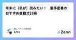
年末に（私が）読みたい！ 要件定義のおすすめ書籍ズ23冊 307 レバテック開発部のフィード
これはなにどうも、レバテック開発部のもりたです。この記事は「レバテック開発部 Advent Calendar 2024」の 2 日目の記事です！昨日の記事は、seoink さんの「TS ユーザーが初見の Haskell を写経して型への認識をすこし改めた記録」でした。学びのワクワク感が詰まっててよかったぜ...！！アドベントカレンダー2日目の本記事では、年末に（もりたが）読みたいな〜と思っている要件定義関連の書籍を23冊紹介します。要件定義の書籍ってイマイチ抽象的だったり、自分の知りたい情報とずれている気がして読むのが難しいですよね。もりたはず〜〜〜〜っとそうだったんですが、...
7日前

LiteLLM を使って色々な LLM API サービスをいい感じに使いこなす 40 Magic Moment Tech Blogさんのフィード
この記事は Magic Moment Advent Calendar 2024 5 日目の記事です。Magic Moment でプロダクトデータを活用した機能の開発・検討をしている @nagomiso です。気づけば前回の記事から 1 年が経過していました。時間の流れが早すぎて驚きを隠せません。 ここ 1 年での変化としては体重が大幅に増えました。原因は間違いなくラーメンの食べ過ぎです。節制せねば… 🍜 はじめにGoogle が Gemini 1.5 Pro / Flush を公開したり OpenAI が GPT-4o / 4o mini, OpenAI o1 / o1 mi...
3日前
理想の働き方を実現するための、自分だけの快適なリモート・オフィス環境 〜freee QAエンジニア 2024年版〜 39 freee Developers Hub
QAエンジニアの多様なリモート・オフィス環境を探る。個性あふれるデスクやモニタ、癒しアイテムが勢ぞろい！
3日前

生成AIはデータサイエンティストの仕事を奪うか？ 34 NTT Communications Engineers' Blog
こんにちは。NTTコミュニケーションズでエバンジェリストをやっている西塚です。今日が10年目の結婚記念日です。 この記事は、NTT Communications Advent Calendar 2024 6日目の記事です。 情報通信白書によると、デジタルデータの活用が企業経営に対して効果があると複数の先行研究で明らかにされています。 ビッグデータを活用している企業はそうでない企業に比べて、イノベーションの創出が統計学的に有意な差で多いと言われています。 私自身もNTTコミュニケーションズにおいて全社データ基盤を立ち上げて、社内システムからデータを収集し、 データサイエンティストと協力しながら、…
3日前

FirestoreRestAPIをWebアプリケーションで楽に使えるようにしておきたい 12 iimon TECH BLOG
はじめに iimonでエンジニアをしている腰丸です。 最近業務でFirestoreRestAPIを使用する機会があったので、使い方を考えてみました。 通常のSDKを用いたコーディングと比べて、そのまま使おうとすると実行したい操作ごとにリクエストやレスポンスの処理を記述する必要があり、 コード量やメンテナンスの面でなかなか辛いものがあるので、そこら辺をうまく解消できるように考えました。 FirestoreRestAPIの使い方自体は、弊社の木暮さんが記事を出してくれています。 tech.iimon.co.jp やりたいこと FirestoreAPI経由で操作するコレクションのスキーマを定義する専…
15時間前
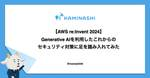
【AWS re:Invent 2024】Generative AIを利用したこれからのセキュリティ対策に足を踏み入れてみた 19 カミナシ エンジニアブログ
カミナシ エンジニアブログ
AWS re:Inventのセッションレポートです。生成AIを使ってセキュリティ業務の生産性を向上させるアイデアを紹介するセッションを聞いて、やってみたことを書きました。
2日前

フロントエンドのテストを書きたい！
63 iimon TECH BLOG
はじめに テストの種類 テストレベル テストタイプ テスト戦略 Reactのテストで個人的に躓いたところ UIコンポーネントのテスト Reduxを使っている場合 @mui/x-date-pickerを使用している場合 MUIのコンポーネントでテーマを使用している場合 カスタムフックのテスト まとめ 参考記事 はじめに こんにちは、株式会社iimonでエンジニアをしている遠藤です！ 本記事はiimonアドベントカレンダー5日目の記事となります。 最近、フロントエンドのコードでリファクタリングをしたい箇所があったのですが、該当箇所のテストコードがありませんでした。 また、自分自身「フロントエンドの…
4日前
Slackで要件を書かずに「質問があります。詳細はスレッドに記載」をやめたほうがいい理由 226 CARTA TECH BLOG
CARTA TECH BLOG
Slackで「質問があります。詳細はスレッドに記載」をやめたほうがいい理由 この記事はCARTA TECH BLOGアドベントカレンダー12/2の記事です。 こんにちは。CARTA MARKETING FIRM でエンジニアをしている 前田@brtriver です。アドベントカレンダーということで、ちょうど最近社内のブログに書いた記事を、社内に限らずテキストコミュニケーションツールを使っている会社では似たようなことが起きているのではないかということで、軽くリライトしてアドベントカレンダーの記事にしたいと思います。 要件書かない「詳細はスレッドに記載」はパブリックに情報を共有する手段としてはイマ…
6日前
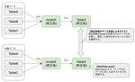
dbtのUnit testsを導入してわかったこと 31 Oisix ra daichi Creator's Blog（オイシックス・ラ・大地クリエイターズブログ）
Oisix ra daichi Creator's Blog（オイシックス・ラ・大地クリエイターズブログ）
はじめに DMO（Data Management Office）でデータプラットフォームセクションを担当しています東條です。データプラットフォームセクションはOisixを中心としたデータ基盤の構築・整備を担当しています。このデータ基盤にはSnowflakeとdbtを使用しています。今回dbt-core v1.8.0で追加されたUnit testsを導入してわかったことを紹介していきます。 dbtのUnit testsとは まずは簡単にdbtのUnit testsを紹介します。dbtのUnit testsはソフトウェア開発において実施されるユニットテストをdbtでも実現できるようにしたものです。…
2日前
【AWS re:Invent 2024】人の労力を減らす、Amazon Bedrock Agents によるイベントドリブンエージェント作成を体験してきた 31 カミナシ エンジニアブログ
はじめに カミナシでソフトウェアエンジニアとしてサービスの開発をしている Taku (X アカウント) です。 ラスベガスで開催されている AWS re:Invent に2年振り2回目の参加をしています。 その中で役立ちそうなワークショップに参加することが出来たので、今回はそのご紹介をさせていただきたいと思います。 公開されているワークショップのリンクも載せているため、最後までご覧いただけると幸いです。 参加したワークショップ 今回参加したのは「Automating technical support and workflows with Amazon Bedrock Agents」というワー…
3日前
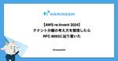
【AWS re:Invent 2024】テナント分離の考え方を整理したらRFC 8693に辿り着いた 60 カミナシ エンジニアブログ
re:Inventに参加中のmanatyです。今回はテナント分離に関するセッションを聞いてアーキテクチャを整理した内容を書いています。
4日前

Panda CSSの基本的な使い方と導入手順 29
iimon TECH BLOG
こんにちは！ 株式会社iimonにてエンジニアをしております、分割マスターのほでぃです。 この記事はiimonアドベントカレンダー6日目の記事です。 今回はCSSフレームワーク「Panda CSS」を紹介します。 この記事ではPanda CSSの利点や基本的な使い方について整理していきます。 Panda CSSとは Panda CSSは、Chakra UIチームが開発した新しいCSSフレームワークです。 特徴は「ゼロランタイムCSS-in-JS」で、パフォーマンスや型安全性を重視しています。 panda-css.com Panda CSSの特徴 ゼロランタイム：静的なCSSをビルド時に生成し、…
3日前
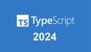
TypeScript/JavaScript Array完全攻略2024 131 フューチャー技術ブログ
フューチャー技術ブログ
<img src="/images/20241205a/ts2024.png" alt="" width="900" height="513"><p><a
4日前
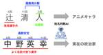
アニメキャラらしさ姓名判断師AIを作る ~漢字の字画に注目した識別器モデリング~ 28 エムスリーテックブログ
エムスリーテックブログ
こんにちは、テックブログでは業務と全く関係ないMLをやるのが好きなエンジニアリンググループゼネラルマネジャーの大垣です。 私は普段は就業後は妻とアニメを観ていることが多いんですが、先日"地面師たち"を観てから、我が家ではドラマが一時的なブームとなっています。 最近見ている"全領域異常解決室"では、日本神話の神が転生して人間として暮らしているという、アニメっぽいトンデモ設定でちょっと好きです。 例えば、アメノウズメノミコトは天野さんとして暮らしています。 そういう夢のある話を想像すると、みなさんも日常に潜む神を見つけ出したくなりますよね！ということで、今回は姓名判断師AIを作ります。 私はやっぱ…
2日前

シェルスクリプトで雪の結晶を描く 52 IIJ Engineers Blog
【IIJ 2024 TECHアドベントカレンダー 12/5の記事です】 はじめに アドベントカレンダーなのでクリスマスっぽいことをしましょう。ホワイトクリスマスには雪。ということで、六角形の雪の結晶の...
4日前
入社半年のWebエンジニアが理解した、ブロックチェーンの面白さと技術の研鑽 13 Speee DEVELOPER BLOG
Speee DEVELOPER BLOG
※この記事は、2024 Speee Advent Calendar ７日目の記事です。 昨日の記事はこちら tech.speee.jp Datachainのエンジニアリングマネージャーの新田です。 この記事ではWebエンジニアの経験をしてきた私が入社して半年経って、「ブロックチェーン何も分からん」から「なるほどブロックチェーン面白い」と感じている今を通して、 エンジニアとしてブロックチェーンは何が面白いのか？ ブロックチェーンという別の技術に触れることで改めて理解した技術への印象 技術を捉え直したことで変化した技術成長の考え をお伝えできればと思います。 自己紹介 Datachainに入社した…
2日前
AWS アクセス管理を一歩先へ！カミナシのセキュアな AWS アクセス管理を実現するシステムの紹介 95 カミナシ エンジニアブログ
カミナシのエンジニアリング組織では、チームメンバーの AWS アカウント環境への定常的なアクセス権限として「センシティブな情報を除いた全リソースへの ReadOnly Access」を付与しており、一方で書き込み権限については必要に応じてメンバーが一時的に権限を獲得できる仕組みとシステムを開発し、運用を行っています。 本記事では、そういった仕組みを開発するに至った経緯や仕様、そしてこれを数ヶ月ほど運用した結果と今後の展望について紹介します。 このシステムは『ハマヤン』という名前で呼ばれていますが、あまねくユーザーに愛される素敵な名称であり、Sec Eng チーム内でも大人気です。開発者が濱野さ…
5日前
アンドパッドSRE/CREメンバーによるCloudNative Days Winter 2024のおすすめセッション 20 ANDPAD Tech Blog
ANDPAD Tech Blog
こんにちは。SREチームの吉澤です。最近はインフラコストマネジメントプロジェクトという新しいプロジェクトも兼務し、Cost Explorerとにらめっこする日々を過ごしています。これはANDPAD Advent Calendar 2024 6日目の記事です。 アンドパッドは、11/28(木)〜29(金)開催のCloudNative Days Winter 2024（CNDW2024）にブーススポンサーとして協賛しました！ 今回はアンドパッドブースの様子と、現地参加したメンバーによるおすすめセッションをご紹介します。これからCNDW2024の内容を追うぞ！という方は、ぜひご参考ください。 アンド…
3日前
知的好奇心を開放しよう 38 Speee DEVELOPER BLOG
不動産DX事業部でプロダクトマネージャーをしている酒井（@ryo-touch）です。社会人になって5年が経ち、自分が自分の仕事を面白くするコツは「自分の知的好奇心を開放すること」だと考えるようになりました。興味をもって問いを立て、探求していくことで結果として目の前のものがすべて面白く映るようになりました。この記事では、自分なりに知的好奇心の意識が向いてることを言語化しました。
3日前
Next.jsからSPAに移行し、Next.jsに戻した話 139 Hello Tech
グローバルなレストラン予約サービス、AutoReserveの開発をしているjavascripterです。 今回は、ハローでのautoreserve.comのアーキテクチャの変遷についてお話しします。 概要 AutoReserveは最初Next.jsで構築され、その後SPAに移行し、最終的に再びNext.jsに戻るという珍しい技術選択をしています。 この記事では、各アーキテクチャの移行の背景と、大規模アプリケーションの段階的移行の実践について解説します。 AutoReserveについて AutoReserveは世界中のレストランの予約が可能なグローバルサービスです。iOS・Android・Web…
6日前
チーム全員で取り組む「デザインガイドライン輪読会」のすすめ 18 freee Developers Hub
この記事は freee Developers Advent Calendar 2024 の6日目です。 adventar.org こんにちは！ freeeで基盤プロダクトのデザイナーをしているnachanと申します。 ちょうど今日誕生日です 🎈 昨年と一昨年も12/6にアドベントカレンダーを投稿し、誕生日に投稿するのはこれで3回目になります。すごいですね。 本題ですが、デザインガイドラインは、プロダクト開発の一貫性や品質を支える重要な基盤です。 しかし、その存在を知りつつも、実際の現場では十分に活用されていなかったり、形骸化してしまうことも少なくありません。 この記事では、私が開発チームのメン…
3日前
生成AIを使ったらAPIの開発が捗った話 29 Tabelog Tech Blog
この記事は 食べログアドベントカレンダー2024 の6日目の記事です🎅🎄 はじめに こんにちは。2022年に入社し、飲食店システム開発部の予約サービスチームに所属している @aaknsk です。 当社では、業務効率化のため社内向けに生成AIを活用したチャットボットを導入しています。 この記事では、オンライン台帳の「食べログノート」で分析機能を開発したときにチャットボットを活用して効率が上がった事例について紹介します。 食べログノートとは 食べログノートはオンライン予約台帳サービスです。 食べログネット予約はもちろん、電話予約や他社ネット予約、ウォークイン(ご予約無し来店)も全て統合管理できます…
3日前

Park Directを支えるデータ基盤の構成 〜2024年12月版〜 29 Nealle Developer's Blog
本記事はニーリーアドベントカレンダー2024の5日目の記事です🎅 はじめに こんにちは。Analyticsチームの上田です。 当チームは、2024年3月にチームの概要を紹介するnote記事「データ分析の宝庫を前にして〜Analyticsチーム1年目の取り組み～」を公開しました。その記事ではチーム発足後間もないデータ基盤の構成を紹介しました。それが図1です。 図1: 2024年3月時点のデータ基盤の構成 当時は連携しているデータソースがZendeskのみで、極めてシンプルな構成でした。 その後、事業や社内のニーズに応える形で様々なデータソースが増えていき、当時とは大きく異なる構成となりました。 …
4日前
【ミラティブ】ISUCON14にスポンサーとして協賛します 14 Mirrativ Tech Blog
Mirrativ Tech Blog
こんにちは、ミラティブの野呂です。 ミラティブは、いよいよ今週末12月8日(日)に開催される「ISUCON14」に協賛します。 ISUCONとは ISUCONとはLINEヤフー株式会社が運営窓口となって開催している、お題となるWebサービスを決められたレギュレーションの中で限界まで高速化を図るチューニングバトルです。 isucon.net 協賛する背景 ミラティブは、「わかりあう願いをつなごう」をミッションに、配信者数500万人超のゲーム配信サービス「Mirrativ」を運営しています。 「Mirrativ」では、配信者と視聴者がリアルタイムに繋がり、ゲーム配信や雑談など、様々なコミュニケーシ…
2日前

New RelicでSpring Frameworkを使ったアプリケーションのキャッシュヒット率を可視化する 8 Uzabase for Engineers
この記事は New Relic Advent Calendar 2024 と NewsPicks Advent Calendar 2024 の7日目の記事です。 ソーシャル経済メディア「NewsPicks」SREチームの飯野です。 NewsPicksではサービスの状態を可視化するために New Relic APM（Application Performance Monitoring）を導入しています。ことあるごとにNew Relicのダッシュボードを確認することでサービスの状態の把握や、安定性向上、パフォーマンス改善のヒントを得ています。 今回はNew RelicのAPMでは用意されていないキ…
2日前
【AWS re:Invent 2024】Amazon Verified Permissionsを本番適用した人のリアルな声を聞いた 27 カミナシ エンジニアブログ
はじめに カミナシでID管理・認証基盤を開発しているmanaty（@manaty0226）です。ラスベガスで開催されているAWS re:Invent 2024に初めて参加しています。今回はブレイクアウトセッションで開催された「Securing 50 million requests per month with AWS-based authorization」を聴講したレポートをお届けします。 Amazon Verified Permissions（AVP）とは Amazon Verified Permissions（AVP）はアプリケーションのアクセス制御を行うためのAWSサービスであり、O…
3日前
〇〇：「資料があるならRAGを作ればいいじゃない。」 94GMOアドパートナーズ TECH BLOG byGMO
はじめに こんにちは。GMOアドパートナーズ 24年新卒の嘉山です。Slackで社内規程や制度について質問できるRAG（Retrieval Augmented Generation）アプリ「tomoc（トモック）」を、新
6日前
KubernetesとPyTorch Lightningによる医療AI開発環境とそのTips 25 エムスリーテックブログ
こちらはエムスリー Advent Calendar 2024 5日目の記事です。AI・機械学習チームの三浦 (@mamo3gr) が、深層学習に基づく医療AIの開発環境とTipsについてお送りします。 DALL-E 3が生成した「巨大クラスタによるAI開発」のイメージ図 Kubernetesクラスタよる医療AIの開発 モデルの性能改善に注力できるフレームワークPyTorch Lightning デバイス特有のコードを書かなくてよい 学習ログやチェックポイントの保存機能が充実している 細かなユーティリティ関数やクラスの実装がある ハマりポイントとワークアラウンド 学習ログファイルを正しく保存する…
3日前
Ruby の未来に向けた機能開発の今 21 ANDPAD Tech Blog
こんにちは @hsbt です。毎回になりますがゲームばかりやっているのに加えて、夏くらいからバラ栽培にハマっています。最近は NHK の趣味の園芸の録画と視聴に加えて Youtube の バラ塾 や ガーデンちゃんねるなどを見て、バラの育成知識を勉強しつつ、来年の春に向けた冬剪定をやったりしています。 さて、ANDPAD Advent Calendar 5日目のこの記事では、Ruby の未来に向けた機能開発の状況についていくつかご紹介します。 Ruby Hackathon 2024 を開催してきました Ruby の core チーム(Ruby コミッタの集まり)では、例年どこかに集まって合宿と…
4日前
認知を優先するか、作り込みを優先するか 21 freee Developers Hub
この記事は、freee Developers Advent Calendar 2024 5日目の記事です。 こんにちは。現在プロダクトマネージャー兼ソフトウェアエンジニアとしてfreee人事労務の開発を行っている金山（id: tepppei）です。先日わたしが投稿した記事（「機能を削る」以外のスコープの絞り方）に引き続き、今回も現在わたしが取り組んでいる「勤怠モニター機能」の開発の中で考えたことを発信します。 本記事の趣旨 新機能のリリース後の次の一手として、認知を優先するか作り込みを優先するかの選択は難しい問題です。 どちらを優先すべきかは、その機能がユーザーに受け入れられることにどれだけ確…
4日前
永続データプログラミングと永続データ構造 78 一休.com Developers Blog
一休.com Developers Blog
この記事は 一休.com Advent Calendar 2024 の3日目の記事です。 昨今は我々一休のような予約システム開発においても、関数型プログラミング由来のプラクティスを取り入れる機会が増えています。 例えば、値はイミュータブルである方が扱いやすい、関数は副作用のない純粋関数にする方がテスタビリティなども含め何かと都合がよい、そういう場面では積極的に不変な値を使い、関数が冪等になるよう意識的に実装します。ドメインロジックを純粋関数として記述できると、堅牢で責務分離もしやすく、テストやデバッグもしやすいシステムになっていきます。 ところで「関数型プログラミングとはなんぞや」というのに明…
6日前

開発プロジェクトを“回す”ための計画とルール作り 78 フォトシンス エンジニアブログ
この記事は Akerun - Qiita Advent Calendar 2024 - Qiita の 3 日目の記事です。 こんにちは、 AkiAbe - Qiita です。ご無沙汰しています。 フォトシンスに入って 5 年目となりました。そして VPoE ロールをやらせてもらって 2 年が経とうとしています。 時間の経つのは早いですね。 この 2 年で開発に関するプロセスやフォーマットなどをルール化し、運用を立て付けてきました。 2 年やってようやく板についてきて、ある程度サイクルが回る状態ができました。 フォトシンスとしてどのような開発フローや開発プロジェクトの管理をしているかをご紹介で…
6日前
Vertex AI PIpelinesでの実験を加速させるためのTIPS #LayerXテックアドカレ 20 LayerX エンジニアブログ
この記事は、LayerX Tech Advent Calendar 2024 の 5 日目の記事です。 tech.layerx.co.jp こんにちは。バクラク事業部のAI-OCRグループでTech Leadをしている島越 (@nt_4o54)です。 今回は、Vertex AI Pipelinesを用いてチームで実験を行う際のTIPS的なものを紹介しようと思います。 なお、Vertex AI Pipelines自体の詳細な説明については割愛します。 過去にもVertex AI Pipelinesについての記事をいくつか公開してるので、(ちょっと情報が古いですが)興味があればそちらもご覧ください…
3日前

新しい技術領域へのチャレンジを促進！フロントエンドエンジニアのためのバックエンド勉強会を開催 10 Findy Tech Blog
Findy Tech Blog
こんにちは！ファインディでFindy Team+開発チームのEMをしている浜田です。 この記事はFindy Advent Calendar 2024 6日目の記事です。 adventar.org 今年の上旬、フロントエンジニア向けにバックエンド勉強会を開催しました。この記事ではバックエンド勉強会を開催した目的や内容、効果について紹介します。 バックエンド勉強会を開催した背景 バックエンド勉強会の概要 バックエンド勉強会の内容 RubyやRailsの学習 VS Codeのプラグイン設定 Rails console / dbconsoleを使ってみる ruby-lang.orgを読む Railsガ…
3日前
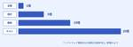
仕様検討段階でのQAの関わり方やチームでの品質保証について 46 freee Developers Hub
こんにちは。freeeでQAエンジニアをしているkenseiです。 freee QA Advent Calendar2024の4日目です。 QAとしてある程度経験を積むと「もっと上流から関わっていきたい」という意識が出てくるという話をよく聞きます。 そこで今回は「QAが上流から関わる」というのは具体的に何をしているのか、どういったメリットがあるのかについてや、チームでやっている取り組みについて書こうと思います。 はじめに まずはfreeeでは実装に入る前にどういった工程があるのか、私が所属している開発チームを例に見てみましょう。 成果物 詳細 オーナー Brief開発のきっかけとなる課題や背景…
5日前
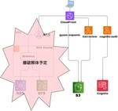
レガシーサーバーをコンテナで再構築した、その5年後の移行と解体 70 KAYAC Engineers' Blog
面白法人グループアドベントカレンダー2024 2日目の記事です。SREの藤原です。 2024年も暮れようとしていますね。ところで今から5年前のこと、builderscon tokyo 2019 というイベントで「レガシーサーバーを現代の技術で再構築する」というタイトルで発表しました。 speakerdeck.com この発表は、当時 Amazon EC2 のシングル構成で動作していたサーバー(SVN, Redmineほか、社内の開発支援ためのサービスが動作していました)を、Amazon ECS をはじめとしたコンテナや AWS のマネージドサービスを用いてリプレイスした、という内容です。 20…
6日前
常に目的を見失わずにいたい。EMとして開発文化を作るために取り組んでいること 9 Speee DEVELOPER BLOG
※この記事は、2024 Speee Advent Calendar 6日目の記事です。 昨日の記事はこちら: tech.speee.jp どうも。デジタルトランスフォーメーション事業本部 (以下、DX事業本部)エンジニアリングマネージャーの石井です。 今回は我々が日々大切にしている「目的思考」のようなバリューを開発組織全体で体現するために、私が取り組んでいることを言語化できればと思います。 常に目的を見失わずにいたい、目的志向開発を目指して 開発組織全体で目的思考を体現するために取り組んでいること 私自身が暗黙知的なものを言語化し、メンバーに伝え続けること 各リーダーに大きな機会を与え、挑戦し…
3日前
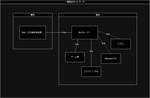
師走だし自宅サーバを構築した話をしてもいいんじゃないかな 65 iimon TECH BLOG
nkmさんよりバトンを受け取りました！ 株式会社iimonにてフロントエンドエンジニアをしております、まつむらです！エンジニア人生で初めてのアドベントカレンダー参加です！ いつもの勉強会とは違って、変なことを書いても良いと言われたような気がしたので、今回は完全に趣味に振り切ろうかなと思います！ 本記事はiimonアドベントカレンダー3日目の記事となります！ はじめに 自宅でのオンプレ運用に必要な物 必要なもの あれば嬉しい物 どこまでを自作していくのか ネットワーク構成について 一般的なネットワーク構成図 今回目指すネットワーク構成図 ルータが2台ある理由 ipv4 と ipv6 について ル…
6日前
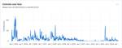
最近のRedash 41 カンムテックブログ
カンムテックブログ
SREの菅原です。 この記事はカンム Advent Calendar 2024の4日目の記事です。 最近のRedashの開発状況について、知っている範囲ですこし書いてみたいと思います。 redash.io Redashといえば様々なデータソースをSQLを使って可視化できるBIツールで、カンムでも業務のデータ分析に使われています。 ただ、一昔前にRedashがはやっていた頃に比べると、最近ではトレンドからは外れたような印象があります。 実際、SaaS Redashが終了した2021年から2023年の4月あたりのGitHubのアクティビティを見ると、活動が停滞しています。 Contributors…
5日前
「Tidy First?」 読書感想文 17 CARTA TECH BLOG
この記事は CARTA TECH BLOG アドベントカレンダー2024 の 12/5 の記事です。 fluctでエンジニアをしていますryuといいます。 「洋書を読む会」と題して、洋書を課題図書にした読書会を、弊社の技術コーチのt-wadaさんを交えて、毎週開催しています。 その会で、「Tidy First?」を読みました。 www.oreilly.com 今回は、その 「Tidy First?」の読書感想文です。 どんな本 著者は テスト駆動開発 や エクストリームプログラミング のKent Beck氏です。 まずTidyとは何？というと、日本語では整頓や整理という意味です。 整頓というと…
3日前

AWSセキュリティインシデント擬似体験ワークショップ参加レポ 39 Nealle Developer's Blog
本記事は株式会社ニーリーアドベントカレンダー4日目の記事です！ SREチームの大木です👋 寒くなってくるとスノボを感じてワクワクしてきますね 🏂 2024年10月24日に開催されたAWSセキュリティインシデント擬似体験ワークショップ に参加してきました！色々学びを得られたので、テックブログとして残そうと思います🙌 具体的な内容に関してはネタバレになってしまうので、その辺りはぼかしつつレポしていく所存ではあります。 インシデント擬似体験WSとは？ AWSさんが提供するワークショップの中でも、複数人が集まって行うセッション形式のワークショップです。 セキュリティインシデントを再現したAWS環境が用…
5日前
LLMを悩ませる"Excel文書"をうまく扱う方法 3 株式会社ファースト・オートメーションのフィード
はじめに株式会社ファースト・オートメーションCTOの田中(しろくま)です！弊社では製造業向けのRAGを使ったチャットボットの開発を行っていますが、 RAGで読み取りづらいなと感じているドキュメントが"Excel文書"です。 LLMを悩ませる"Excel文書"とはここで"Excel文書"と呼んでいるドキュメントは、「構造化されたテーブルを保存しているExcelファイル」ではなく、「 セルに文書を書いたり、オブジェクトや画像を挿入することで、いわゆる一般的な文書を作成しているExcelファイル 」のことを呼んでいます。そもそも一般的な文書作成においてはExcelではな...
5時間前
マイグレーション実行時のロック競合によるDBインシデントから学んだこと 8
 GMO Developers
GMO Developers
インシデント発生から原因特定までの道のり ある日の午後、Slackに突如として大量のエラー通知が流れ始めました。 MySQLへの接続がタイムアウトしているようです。このエラー自体は時々見かけるものですが、今回は明らかに様 […]
3日前

サーバレスをフル活用したビジネスｄアプリのアーキテクチャ（前編） 37 NTT Communications Engineers' Blog
この記事は、 NTT Communications Advent Calendar 2024 4日目の記事です。 はじめに この記事はコミュニケーション&アプリケーションサービス部でビジネスdアプリを開発している木村、立木、富田、西谷の共同執筆です。 今回は、NTTコミュニケーションズで提供するモバイルアプリ、「ビジネスdアプリ」のアーキテクチャに焦点を当て、サーバレスサービスをどのように活用しているかを2回にわたって紹介します。 この記事（前編）では、開発背景やサーバレスサービスを活用したアーキテクチャの概要を中心に解説します。後編では、具体的な運用やCI/CDの仕組みに焦点を当てる予定です…
5日前
OAuth/OIDCのClient管理を"型"で制する - freee_client_typeの軌跡 36 freee Developers Hub
freeeの認可サーバー移行プロジェクトの一環として、freee_client_typeの誕生とその運用について詳しく解説。多様なクライアントに対応する新たな機能制御の導入背景と成果を紹介します。
5日前
重複したIAM、拒否と許可どっちが優先？アクセス制御の特性をAWS・Google Cloud・Azure・Firebaseそれぞれについて理解する 35 Flatt Security Blog
Flatt Security Blog
はじめに こんにちは、セキュリティエンジニアの@okazu_dm です。 突然ですが、皆さんは以下のクイズに自信を持って回答できるでしょうか。これはSRE NEXT 2023で弊社が出題したクイズなのですが、それぞれのポリシーに存在するAllow, Denyのうちどれが優先されるかがポイントになります。 クイズの答えはここをクリック クイズの正解は......「④なし」でした。AWSのIAMポリシーは拒否(Deny)優先です。しかし、それは他のクラウドサービスでも果たして同じでしょうか？ 今回の記事では、各種クラウドサービスにおけるアクセス制御について焦点を当てます。具体的には「それぞれのアク…
5日前
首相官邸を掘ってみよう 52 KAYAC Engineers' Blog
こんにちは、カヤック技術部の竹田です。 【カヤック】面白法人グループ Advent Calendar 2024 3日目の記事になります。 本稿は首相官邸ホームページのドメイン:kantei.go.jpの調査記事になります。 首相官邸のホームページ 首相官邸をdigる ドメイン情報を調べる方法は幾つかありますが、digを使って調べます、「digる」＝「掘る」という言い回しもあるコマンドです。 ホームページhttps://www.kantei.go.jpはhttps://kantei.go.jpからリダイレクトされているので、各ドメイン情報を調べてみましょう。 $ dig www.kantei.g…
6日前
vLLMで独自実装モデルを高速推論させる 33 Tech Blog - Turingのフィード
はじめにチューリング生成AIチームの荒居です。この記事は生成AIアドベントカレンダー2024の4日目の記事です。この記事では、動画生成モデルを題材に、vLLMを用いて独自のマルチモーダルモデルを推論させる方法について解説します。vLLMはLLMの高速推論・サービングのライブラリで、LlamaやQwenなどの有名なモデルについてはサポートされているため非常に簡単に利用することが可能です。一方で、独自に実装したモデルを組み込む方法については公式ドキュメント以外ではほとんど情報がなく、かつ公式ドキュメントも情報が豊富とは言えないためなかなか手が出しづらい状況になっています。そこで...
4日前
SREチームのロードマップを作った話 7 株式会社モニクルのフィード
はじめに株式会社モニクルでSREをしているbeaverjrです。この記事はモニクルAdvent Calendar 2024の6日目の記事です。今回は、弊社のSREチームのロードマップを作成した背景や、作成にあたって意識したことをまとめました。 なぜロードマップを作成したかSREチームでは、これからチームとしてどうしていくか、という具体的な中長期における計画は立てておらず、方向性が漠然としている状態でした。また、弊社のSREチームは未経験からスタートしたチームであり、1年と少しが過ぎて徐々にSREとしての考え方や業務の進め方に慣れてきたところでした。このタイミングで、改め...
3日前
配属1ヶ月のインターンが勝手にRBS::Inlineを導入して怒られた 4 Techouse Developers Blog
Techouse Developers Blog
みなさんはRBS::Inlineをご存知でしょうか。 RBS(Rubyに型システムを導入するインターフェース言語)をコメントから生成出来るようにしたものです。 先日参加したRubykaigi 2024 follow upというイベントでRBS::Inlineを知り、これはいいものだと早速私は会社のPRに勝手にRBS::Inlineを混ぜました。 そうしたらレビューでこんなコメントが・・・
2日前
DuckDB を使ったデータ品質保証の実践 32 Timee Product Team Blog
Timee Product Team Blog
この記事は Timee Advent Calendar 2024 シリーズ 1 の5日目の記事です。 はじめに こんにちは。タイミーの DRE チームの chanyou です。2024年の3月に DRE チームにジョインして、社内のデータ基盤を作って運用しています。 DuckDB を使ってデータ基盤で扱うデータの品質を保証し始めたので、その内容をご紹介します。 データ品質と完全性 タイミーのデータ基盤で重視しているデータ品質 タイミーでは、DMBOK を参考に以下のデータ品質を重視して設計や日々の運用を行っています。 特性 意味 完全性 データが欠損していないか 適時性 必要なときにすぐにデー…
4日前
私流、開発時における各 AI サービスの使い分け方 47 Magic Moment Tech Blogさんのフィード
こんにちは！Magic Moment でフロントエンドエンジニアをしている @morishin です。この記事は、Magic Moment Advent Calendar 2024 1 日目の記事です。(弊社の今年のアドベントカレンダーは平日のみ投稿するスタイルです) はじめにChatGPT の登場以降、エンジニアの開発を支援してくれる新しい AI サービスが次々と現れています。それはもう雨後の筍の如く現れるので、正直どれをどう使い分けたら良いのか分からん、という人も少なくないと思います。開発時における各 AI サービスの、自分なりの使い分け方を書いておきます。参考に...
7日前
問答って想像力が必要なんですよね。「問い」を考えることも「答え」をだすことも。 6 ハウテレビジョンブログ
ハウテレビジョンブログ
こんにちは！mond運営長の三上です。 まずは自己紹介させてください。mondにいい質問が来ていたので、答えたんですが私の性格や価値観を一番表しているのはこちらです。 https://mond.how/ja/topics/tivaorsvh9pyl68/0zrypy7tgw4eku7 ・・・はい、「こんなやつなんだな」と思っていただければ（笑）。 ちなみにmondに対しては本気でして、自分の愛車にmondステッカーを貼るくらいプロダクト愛があります。 https://x.com/mikamitosh/status/1820442364571488312 そんなmondですが、実は「やばい」んで…
2日前

そうだ、エディタを変えよう 〜ZedでLSPを使用する〜 27 Magic Moment Tech Blogさんのフィード
この記事は Magic Moment Advent Calendar 2024 3 日目の記事です。Magic Moment でエンジニアをしている 栗原 です。みなさん。マイクロサービスアーキテクチャのプロダクトの開発していると、大量に起動したサービスがローカル環境のリソースを圧迫してしまい、エディタが思ったように動いてくれないといったことはありませんか。GCP workstationやGitHub Codespacesなどクラウドベースの開発をすると解決できますがコストが見合わないですし、使うサービスだけ立ち上げてというのも開発している機能によってはできません。PCのスペック...
5日前

突撃！隣のキーボード！〜 2024年冬 ニーリー Ver. 〜 41 Nealle Developer's Blog
こんにちは！ニーリーアドベントカレンダー2024 3日目担当のSREチームの宮後(@miya10kei)です。 最近、LLMと格闘する日々を送っています🤼♀️ 企業テックブログで散々こすられた企画「突撃！隣のキーボード！ 」ですが、ニーリーもテックブログをはじめたのにまだこすってないではないか😤、、、ということに気づいたので今回はニーリー版をお届けしたいと思います🍚 リモートワーク環境版は夏に一度やりました。よかったらそちらもどうぞ！ nealle-dev.hatenablog.com ニーリーのエンジニアの皆さんはどんなキーボードを愛用しているんでしょうね！？ それではどうぞ〜 SRE 宮…
6日前
【AWS re:Invent 2024】耐障害性を高めるCell-based Architectureを体験してきた 38 カミナシ エンジニアブログ
AWS re:Invent 2024のセッションレポートです。Cell-based architectureと呼ばれる高いスケーラビリティと耐障害性を持つシステムアーキテクチャのハンズオンワークショップに参加した内容です。
5日前
リモートワーク時代を生き抜くAI・機械学習チームの働き方 3 エムスリーテックブログ
こちらはエムスリー Advent Calendar 2024 7日目の記事です。 前日は大垣さんのアニメキャラらしさ姓名判断師AIを作る ~字画に注目したモデリング~でした。とても面白いのでそちらもどうぞご覧ください。 はじめに こんにちは。AI・機械学習チームの氏家（@mowmow1259）です。 今回のテーマはリモートワークです。 最近オフィス回帰の流れがあるとはいえ、リモートワークを導入する企業はコロナ禍以前と比べて確実に増えてきています。 エムスリーでも2021年からリモート勤務がベースとなっており、さらに最近では関西と九州にもサテライトオフィスができるなど、全国各地からリモートワーク…
2日前
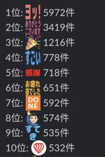
遊び心が原動力！エンジニアがハマる自由研究の世界 5 asoview! Tech Blog
asoview! Tech Blog
アソビュー！ - Qiita Advent Calendar 2024 - Qiitaの6日目（裏面）です。 アソビューで座席指定システムのエンハンスに携わっている東郷です。 はじめに エンジニアの皆さん、日々の仕事で技術に向き合う中で、「遊び心」を忘れてしまってはいませんか？ この記事では、私が業務外の余暇に取り組んだ自由研究の体験をもとに、気軽に技術の世界を探求する素晴らしさをお伝えできればと思います！ 自由研究のきっかけ 社内コミュニケーション施策の一環で「Slackでどんな絵文字が使われているか」を調査した際、カスタム絵文字が1000種類以上も登録されていることに驚きました。その中には…
3日前
実践WEBビーコン：メール開封率計測テクニックの全て 36 レバテック開発部のフィード
この記事は「レバテック開発部 Advent Calendar 2024」の 3 日目の記事です！昨日の記事は、もりた さんの 年末に（私が）読みたい！ 要件定義のおすすめ書籍ズ23冊 でした。 これはなに？皆さん、こんにちは！最近、インドネシア旅行に行ったら現地の方より顔が濃くて、道を歩いていると現地語で話しかけられた@tomo_nxnです。さて、そんな旅のエピソードはさておき、今回はメール配信システムの機能を使わずに、独自で Web ビーコンを使用してメール開封率を計測する仕組みを作ったので、その時の注意点や実際の実装方法などを紹介していきます！ 前提レバテック開発部で...
5日前
コードレビューでよくあったコメント9選 〜Terraform編〜 22 MIXI DEVELOPERS NOTEのフィード
!この記事は MIXI DEVELOPERS Advent Calendar 2024シリーズ2の4日目の記事です。 この記事についてkotapjp さんの記事「Go初学者へのコードレビューでよくあったコメント20選」やriddle_tec さんの記事「コードレビューでよくお願いする、コメントの追加のパターン7選」が好評だったようなので、便乗して「Terraform初学者へのコードレビューでよくあったコメント9選」を書いてみました。https://zenn.dev/mixi/articles/f07be7f476e2f3https://zenn.dev/mixi/art...
4日前
マルチモーダルLLMで複雑な画像を攻略：AOAIでGPT-4oをFine-tuning 32 Insight Edge Tech Blog
Insight Edge Tech Blog
はじめに Insight EdgeのLLM Engineerの藤村です。 昨今、企業のDX推進に伴い、社内に蓄積された大量の画像データや文書の効率的な活用が求められています。弊社では、実務でLLMを活用する際、画像や表形式、複雑な図を含むドキュメントの理解が大きな課題となっています。この課題は多くの企業でも同様に直面していると考えられ、その解決は業務効率化において重要な意味を持ちます。 例えば： PowerPointの表やグラフの内容理解 手書きのホワイトボード写真からの情報抽出 複雑な組織図の階層関係の把握 スキャンした文書の図表部分の解釈 これらの課題に対して、以下の2点を検証しました： …
7日前
セキュリティのシフトレフト ―SAST/IASTツール活用に向けた検証― 31 RAKUS Developers Blog | ラクス エンジニアブログ
RAKUS Developers Blog | ラクス エンジニアブログ
こんにちは。 株式会社ラクスで先行技術検証をしたり、ビジネス部門向けに技術情報を提供する取り組みを行っている「技術推進課」という部署に所属している鈴木（@moomooya）です。 ラクスの開発部ではこれまで社内で利用していなかった技術要素を自社の開発に適合するか検証し、ビジネス要求に対して迅速に応えられるようにそなえる 「技術推進プロジェクト」というプロジェクトがあります。 このプロジェクトで過去に検証した「継続的アプリケーションセキュリティ」について共有しようかと思います。 課題の経緯、前提条件 課題の経緯 期待する導入成果 シフトレフトや、脆弱性診断ツールに関する概念 前提条件 実現手法 …
5日前
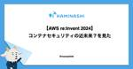
【AWS re:Invent 2024】コンテナセキュリティの近未来？を見た 30 カミナシ エンジニアブログ
AWS re:Inventのセッションレポートです。コンテナアプリケーションのCI/CDパイプラインにSBOMの生成とビルド生成物の署名と検証を組み込むワークショップに参加しました。
5日前
受入基準（Acceptance Criteria）の導入。スクラムチームにおける開発者とQAの融合への挑戦 8 asoview! Tech Blog
開発者とQAの役割が分断されているせいで、品質や効率が低下していると感じたことはありませんか？例えば、開発者が作り上げた機能をQAがテストする段階で認識のズレから不具合が見つかり、手戻りが発生する。こんな経験はありませんか？
4日前
【2024年最新】スクラムを効率化するNotion活用術：ストーリーポイント管理とダッシュボード設計 4 LayerX エンジニアブログ
この記事は、LayerX Tech Advent Calendar 2024 の ６ 日目の記事です。 tech.layerx.co.jp ▼ 今回お話しすること こんにちは！バクラク事業部 ソフトウェアエンジニアの @minako-ph です 🐱 弊社では全社的に Notion を活用し、申請・経費精算チームではスクラム開発を採用しています。2週間ごとのスプリントを回す中で、Notionを使った進捗管理や作業効率向上に取り組んでいます。 1年前に執筆した Notionでスプリントのあれこれをダッシュボードで可視化する という記事では、Notionを活用したスクラム管理の仕組みを紹介しました。…
2日前
新Linuxカーネル解読室 - タスクスケジューラ (その1) 4 VA Linux エンジニアブログ
VA Linux エンジニアブログ
今回から数回に分けて、タスクスケジューラについて解説します。今回は、基本的な概念や全体像を中心としたお話です。
3日前
データ基盤におけるIaCの重要性とその運用 29 Finatext Tech Blogのフィード
この記事は、Finatextグループ Advent Calendar 2024の3日目の記事です。 はじめにナウキャストでデータエンジニア/データプラットフォームエンジニアとして働いている@mt_musyuです。ナウキャスト社内のデータ基盤の構築や運用を行い、また社内の知見を生かしてクライアント企業様のデータ基盤の構築や運用の支援を行っています。近年、データ利活用の推進や生成AIの利用が進む中で、データ基盤の重要性が増しています。単にデータ基盤を構築するだけでなく、増え続けるデータやユーザーを考慮した運用も求められています。そのため、データ基盤の構築や運用を効率化するために、Ia...
6日前
Rails の time_zone ヒヤリハット 29 freee Developers Hub
こんにちは！freee の gon です。 freee Developers Advent Calendar 2024の2日目の記事です。 freee ではマイクロサービスを含め大小さまざまなサービスが稼働してますが、あるサービスで Rails の time_zone の設定をし忘れており、time_zone がデフォルトの UTC 扱いで動いていました（freee では Asia/Tokyo で揃っている）。開発中にバグが見つかったことで判明し、time_zone を設定し直すことで対応をしました。この記事では、実際に起こった問題とその際に調査したこと、具体的な対応、また同じ間違いを起こさな…
7日前
アジャイルQAってなんだ？をみんなで考えた話 28 freee Developers Hub
こんにちは。freee人事労務でQAエンジニアをしているsaeです。 freee QA Advent Calendar2024の3日目です。 私は長いことSIerとしてPM/ITSMの道を歩んできましたが3年前にQAエンジニア（以下、QA）にキャリアチェンジしています。そして2024年の9月にfreeeにQAとして転職してきました。 アジャイル開発にとびこんでQAという職種に出会った当初、色んなことの曖昧さに戸惑いました。スクラム開発では職能の明確な線引きはないし、QAに求められる技量も見渡す限りチームによって様々。自分のスキルでどうやって組織に貢献して行ったらいいんだろう...？ と悩みはじ…
6日前
ワイヤーフレームが一瞬で作れる生成AI「Relume」の使い方 28 株式会社LIG(リグ)｜DX支援・システム開発・Web制作テクノロジー の記事一覧 | 株式会社LIG(リグ)｜DX支援・システム開発・Web制作
株式会社LIG(リグ)｜DX支援・システム開発・Web制作テクノロジー の記事一覧 | 株式会社LIG(リグ)｜DX支援・システム開発・Web制作
こんにちは！ インハウスマーケティング部のりこぴんです。 Webサイトのサイトマップやワイヤーフレームを考えるのって重要でありながら、とても時間がかかりますよね。 今回はプロンプトを入力するだけで一瞬でサイトマップとワイ […]
6日前
Apache Iceberg: The Definitive Guide 輪読会まとめ 28 Snowflake Data Heroesのフィード
はじめにこんにちは！ナウキャストのデータエンジニアのけびんです。今年の6月に Iceberg Table が Snowflake の機能として GA したのは記憶に新しいかと思います。自分もこの時から Iceberg に興味を持ちブログを書いたりしました。https://zenn.dev/dataheroes/articles/snowflake-iceberg-introductionそんな中、ちょうど良いタイミングで Apache Iceberg: The Definitive Guide が2024年5月に出版されており、 SnowVillage の有志の方たちと輪読...
6日前
エンジニア開発合宿2024を開催しました！ 24 カミナシ エンジニアブログ
こんにちは！カミナシで Engineering Manager をしております Keeth こと桑原です．今年もカミナシ社で11/14-15 の２日間，開発合宿を開催しましたので今回はそのレポートとなります！ 開催概要 日程：11月14日 12:30 〜 11月15日 15:30 場所：熱海 参加者：エンジニア21名（内，リモート参加者2名） ※カミナシに在籍しているエンジニアは合計30名ちょっといます 今回の開発合宿のコンセプトとしては， チームを超えた交流・親睦を深めることでお互いを知る としました． 現在のカミナシはマルチプロダクト戦略に舵を切っており，プロダクト毎にチームがパキッと分か…
6日前
OJT初期に生成AIを使って素早くチームにジョインできた話 22 Tabelog Tech Blog
この記事は 食べログアドベントカレンダー2024 の4日目の記事です🎅🎄 はじめに 初めまして。食べログ開発本部アプリ開発部オーダーチーム、新卒1年目の伊藤です。 私は現在、バックエンドエンジニアとして食べログオーダーの開発に携わっています。 8月に現場配属されてから、いくつかのリリースを経験させていただきましたが、4月入社時点ではバックエンドの開発経験はほとんどありませんでした。 学生時代に研究関連でXAMPPを少し触ったことがある程度です。 そんな私が短期間で実務に馴染むことができたのは、生成AIを活用した学習・実務支援がありました。 この記事では、OJT初期に生成AIを活用した事例やそこ…
5日前
Cloud SQL を夜間自動停止してコストを削減してみた 22 Magic Moment Tech Blogさんのフィード
この記事は、Magic Moment Advent Calendar 2024 2日目の記事です。こんにちは、 Magic Moment で QAE をやっている yano です。今年は Cloud Infra におけるコスト最適化や節約を実施することが多かった一年でした。インフラコスト削減施策の一環で、本番環境ではない環境で利用している Cloud SQL インスタンスは夜間停止することを実施しました。そこで本記事では、コスト削減のために Cloud Scheduler だけを用いて簡単に Cloud SQL インスタンスを自動停止する方法を紹介します。 コスト削減効果...
6日前
Starlinkとhome 5Gを色々と比較してみました 22 IIJ Engineers Blog
【IIJ 2024 TECHアドベントカレンダー 12/2の記事です】 ブログを書くようになって、Starlink導入の相談を受ける機会が増えてきました。個人・法人に関わらずStarlinkに興味を持...
7日前
【イベントレポート】VPoEの視点で見る組織の進化 〜組織変革とグローバル連携、次世代リーダー育成の戦略〜 3 Sansan Tech Blog
Sansan Tech Blog
2024年10月9日、Sansan株式会社はイベント「VPoEの視点で見る組織の進化 〜組織変革とグローバル連携、次世代リーダー育成の戦略〜」を主催しました。イベント会場となったのは、JR渋谷駅に隣接する渋谷サクラステージ。弊社は2024年9月30日に同所へとオフィス移転したのですが、オフィスでのイベント開催は移転後初でした。オフライン&オンラインのハイブリッド形式で開催いたしました。本イベントでは、キャディ株式会社とSansan株式会社、株式会社メルペイの3社のVPoEが登壇。それぞれ異なる事業モデルや事業フェーズ、開発組織の構造・規模の中で、マネジメントに向き合う3者が、組織変革やグローバ…
2日前
「新技術・サービス検証支援」という支援施策を始めました 3 ABEJA Tech Blog
ABEJA Tech Blog
ABEJAのCTO室の村主です。ABEJAアドベントカレンダー2024 6日目のブログになります。 本日は、「新技術・サービス検証支援」という支援施策の内容と狙いを書いていきます。 ABEJAに興味ある方や、AI系ツールの支援設計を行う方に参考になればと思います。 「課題」と「狙い」に想いが詰まっているのでそこだけ見ていただくでもOKです。それ以降は施策の工夫点になります。 「新技術・サービス検証支援」の特徴 課題 元々ABEJAではご多分に漏れずChatGPT Plusの利用を支援する施策を行なっていました。しかし昨今、2週間単位くらいで色々なAIツールがバズります。Gemini ProやC…
3日前

多段ProxySQLによるスキーマ統合およびTiDB移行 3 メルカリエンジニアリングブログ
Mercari DBRE(DataBase Reliability Engineering Team)のtaka-hです。 本エントリでは、メルカリの開発環境のデータベース移行の事例を紹介します。なお記事は、MySQL […]
3日前
スマホアプリエンジニアからバックエンドエンジニアへ領域横断して得たもの 13 Tabelog Tech Blog
この記事は 食べログアドベントカレンダー2024 の5日目の記事です🎅🎄 こんにちは。食べログ開発本部 アプリ開発部 の高山です。 私は現在食べログオーダーのバックエンド開発のメイン担当をしております。それ以前はスマホアプリの領域を専門としておりましたが、ここ3年間はバックエンドを中心に開発しております。 今回はその経験を元に、スマホアプリ開発の考え方を活かしつつ、バックエンド開発へ乗り出していった際の考え方を記載させていただきます。 目次 スマホアプリ開発を専門領域にしてきた バックエンド開発という新たな領域へ踏み出す バックエンド開発の攻略法を考える スマホアプリ開発との類似性を見つける …
4日前
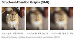
Grad-CAMで注目されている部分をぼかすとどうなるの？ 13 エムスリーテックブログ
こちらはエムスリー Advent Calendar 2024 4日目の記事です。 こんにちは、最近ニューラルネットの可視化についての論文を読んだAI・機械学習チーム(AIチーム)の農見(@rookzeno)です。ニューラルネットの可視化で有名なものといえばGrad-CAMだと思いますが、僕が読んだ論文ではstructured attention graphs (SAGs)という可視化の手法を使ってました。これは平たく言えばニューラルネットが予測できる画像の最小限の部位はどれかを出すものです。 目と鼻と口以外はぼかしてても画像モデルが正しい予測ができる この方法の良さとしては、複数の注目部位が得…
4日前

Configの大量課金リスクと自動化のリスクへの具体的な対策 5 Technology - NRIネットコムBlog
Technology - NRIネットコムBlog
こんにちは、大林です。JAWS-UG朝会 #63 で、「ガードレールの有用性とリスク対策」というタイトルで登壇してきました。ガードレールはアカウントを安全に運用する上で実装しておきたい仕組みですが、必ず理解しておくべきリスクもあります。本ブログでは、JAWS-UG朝会 #63で発表した内容を説明していきます。 jawsug-asa.connpass.com 発表資料 アカウント運用のあるべき姿 アカウント運用におけるコスト増加 アカウント運用の自動化によって発生するリスク 小さく自動化を進める ガードレールの大量課金リスク ガードレールの大量課金リスク対策 大量課金リスクへの予防策 まとめ 発…
3日前
Honoで始めるエッジコンピューティング：Cloudflare WorkersとD1で作るミニブログ 5 asoview! Tech Blog
1. はじめに こちらの記事は、アソビュー！ Advent Calendar 2024の５日目（裏面）です。 みなさんこんにちは、アソビューでエンジニアをしています竹村です。 以前からユーザーに近いエッジサーバーに分散してリクエストを処理するエッジコンピューティングの仕組みに興味を持っており、高負荷時や障害発生時にも重要な機能を低レイテンシかつ安定して提供する仕組みを作れるのではないかと考えていたのですが、なかなか触る機会もなく今日まできていました。 そこで今回は、Cloudflare Workers向けのシンプルで軽量なHonoフレームワークを使用し、記事の投稿、一覧表示、詳細表示機能を持っ…
3日前
新卒エンジニアが大規模リファクタリングの失敗から学んだ事業との向き合い方 17 Speee DEVELOPER BLOG
※この記事は、2024 Speee Advent Calendar2日目の記事です。 昨日の記事はこちら tech.speee.jp こんにちは！ 2023年に新卒でSpeeeに入社し、イエウールというサービスで開発を行っている林崎と申します。 Speeeに入社するまでは、自分なりにコードを書いて自己満足をする程度の経験しかなかった私ですが、新卒1年目の終わりごろにいきなり大規模リファクタリングに挑戦させてもらえることになりました。 今回は、大規模リファクタリングが失敗に終わってしまうまでの顛末と、そこで得られた「エンジニアとして事業にどのように向き合っていくべきか」に対する学びについて共有し…
6日前

Nx活用術！モノレポ内のStorybookのパス設定自動化 10 Findy Tech Blog
ファインディ株式会社でフロントエンドのリードをしている新福(@puku0x)です。 この記事はFindy Advent Calendar 2024 4日目の記事です。 adventar.org Nxはモノレポ管理の便利なユーティリティとして @nx/devkit を提供しています。 今回は @nx/devkit を利用したStorybookの設定の自動化についてご紹介します。 Nxについては以前の記事で紹介しておりますので、気になる方は是非ご覧ください。 tech.findy.co.jp モノレポでStorybookをどのように管理するか？ どうやってパス設定を自動化するか？ 実装してみよう！…
5日前
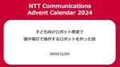
子ども向けロボット教室で懐中電灯で操作するロボットを作った話 15 NTT Communications Engineers' Blog
AIロボット部（社内サークル）では、子ども向けロボット教室を開催しました。 今年は、懐中電灯の光を利用して進行方向を指示するロボットを制作しました。 偏光板と光抵抗を使った分圧回路を活用し、簡単な電子工作の知識で実現可能な仕組みを採用しました。 ファミリーデーとロボット教室 ロボット教室の内容 方向指示のしくみ 準備に関して プロトタイプの作成 1. 手軽に入手できる部品で構成する 2. できるだけシンプルな仕組みにする 3. ロバスト性の確保 基板作成、調達 昨年の反省は活かされたのか？ 当日の様子 おわりに（+社外イベントへの出展のおしらせ） 但し書き こちらは、NTT Communica…
6日前
Google ColaboratoryでANTLRを動かして、構文木の画像生成してみる 4 アルダグラム Tech Blogのフィード
こんにちは！アルダグラムでレポートチームのエンジニアをしている志茂です。レポートチームでは、お客様が利用されているExcelファイルをKANNA上にアップロードし、webから編集できるような機能をKotlinとSpring Bootで開発しております。Excelファイルを読み込み編集できるようにするためには、色々な考慮事項があるのですが、今回はその中でもExcel関数の読み込みで利用している、ANTLRという構文解析を行うためのツールをGoogle Colaboratory上で動作させ、解析した結果を構文木の画像として生成する方法をご紹介します。 構文解析ツールを使わないと大変...
4日前
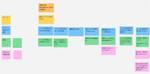
チームで実例マッピングをやってみた 4 freee Developers Hub
こんにちは freee会計のQAエンジニアをしているsugenoです。 freee QA Advent Calendar 2024 - Adventar 5日目です。 私が所属する開発チームで、実例マッピングを作ってチーム内での要件整理/検討を行ったのでその取り組み内容について書いていこうと思います。 そもそも実例マッピングとは、ストーリーをルールと例に構造化して要件を明確にする手法で 今回はV字モデルでいうと要求定義/要件定義/基本設計の部分を範囲として実施してます。 V字モデル 引用元：https://speakerdeck.com/nihonbuson/example-mapping?s…
4日前
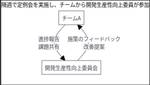
Findy Team+を活用しての開発生産性向上の取り組み 9 asoview! Tech Blog
はじめに この記事はアソビュー！ Advent Calendar 2024 の４日目（裏面）です。 こんにちは、アソビューでバックエンドエンジニアをしている長友です。 アソビューでは顧客の期待により迅速に対応するエンジニア組織構築を目的として、今期から”開発生産性向上”にフォーカスしています。 そして、そのアプローチの一環としてFindy Team+の導入・活用を始めました！ この記事ではFindy Team+を導入して数ヶ月間における活用とその効果ついてチーム単位・チーム横断レベルの両面において紹介していきたいと思います。 開発生産性を向上させる体制 開発生産性向上委員会の設置 エンジニア組…
5日前
社内AIチャットボットにコードレビューを手伝ってもらう 14 Tabelog Tech Blog
この記事は 食べログアドベントカレンダー 2024 の3日目の記事です 🎅🎄 こんにちは。食べログサービス本部デザイン部で飲食店様向けのUIデザインや実装を担当している、デザイナーの皆川です。 当社では、業務効率化を目的として、社内向けに生成AIを活用したチャットボットを導入しています。 今回、そのチャットボットにコードレビューを試験的に手伝ってもらい、そのプロンプトの最適化プロセスと所感をまとめました。本格的な効率化には他の方法も考えられますが、まずは手軽に試した結果をご紹介します。 また、本記事で触れるのはSlimのみですが、他言語でも応用できそうなので興味があれば試してみてください。 S…
6日前

テックブランディング委員会立ち上げから4年、あらためて組織に起こった変化を振り返る 14 Uzabase for Engineers
ソーシャル経済メディア「NewsPicks」の高山です。 この記事は NewsPicks Advent Calendar 2024 の2日目の記事です。昨日は我らがあんどぅさんによるプロジェクトマネジメントのお話でした。 はじめに 2020年頃から2024年までの4〜5年ほどかけて、社内でテックブランディングの盛り上げ担当をしてきましたので、そのまとめを書いていきます。 だいぶ長くなりましたが、備忘録も兼ねて書いていきますのでご興味のある方はお付き合いください。 僕は2020年にNewsPicksに入りまして、最初の2年ほどはCTOをしていました。その後はNewsPicksではいわゆるSREな…
6日前
グローバルQAエンジニアチームのマネージャーやってみた 14
freee Developers Hub
こんにちは。フリー人事労務でQAエンジニアをしているyamaeriです。 freee QA Advent Calendar2024 2日目です。今日は私がグローバルQAエンジニアチームのマネージャーになってみた話をします。 自己紹介 私は2022年4月にフリーにQAエンジニアとして入社し、半年間はフリー会計のQAを担当していました。 QAは「Quality Assurance（品質保証）」の略で、QAエンジニアとはプロダクトを本当にリリースして大丈夫なのか、事前にプロダクトをテストする計画を立てたり、テストの実施をしたり、品質の改善に向けた活動をするエンジニアのことです。 入社して半年が経つ頃…
7日前

【プロダクトヒストリーカンファレンス2024 】LayerX&Nealle セッション書き起こしレポート 13 Nealle Developer's Blog
この記事はニーリーアドベントカレンダー2024の3日目の記事です。今日は2本出てます！ こんにちは、ニーリーの菊地(@_tinoji)です。 先日、YOUTRUST社主催の大規模カンファレンス「プロダクトヒストリーカンファレンス2024」が開催され、ニーリーはスポンサーとして、LayerXさん(のVPoE 髙橋さん)と 事業成長を爆速で進めてきたプロダクトエンジニアたちの成功談・失敗談 というタイトルで登壇をさせていただきました！当日ご来場いただいた方、オンライン視聴をしていただいた方、ありがとうございました。立ち見も出るほどの盛況でした、、、！ 🎉 lp-a.youtrust.jp 登壇直後…
6日前
Terraform Provider for HatenaBlog Members を使ってみました。 12 BASEプロダクトチームブログ
BASEプロダクトチームブログ
<この記事は Hatena-Blog-Workflows-Boilerplate によって作成されました> こんにちは！ BASE 株式会社 Pay ID 兼 BASE PRODUCT TEAM BLOG 編集局メンバー の @zan_sakurai です。 今回は、BASE PRODUCT TEAM BLOG のブログメンバーを Terraform Provider for HatenaBlog Members で管理をはじめたので、その紹介をいたします。 前回は、Hatena-Blog-Workflows-Boilerplate を使ってとある SaaS のリンクを一括置換した話について書…
6日前
闇バイト強盗の事案からオンラインサービスの認証強化について考えた話 3 MIXI DEVELOPERS NOTEのフィード
ritou です。MIXI DEVELOPERS Advent Calendar 2024 12/3の記事です(書くのだいぶ遅れましたすみません)https://qiita.com/advent-calendar/2024/mixi最近は社内のサービスから利用されるID管理機能を担当しています。当然ながら、単一サービスにおけるID管理機能複数サービスが利用するID基盤が提供する機能というのは求められる要件も変わります。どのサービスにも求められる機能もあれば、特定のサービスのみに求められる機能もあります。あることを実現したいとなったときにID基盤がどの機能をどの形で提供...
3日前
バケット名を変更したいだけなのに、大量データ移行でDataSyncを使った話 3 LIVESENSE ENGINEER BLOG
LIVESENSE ENGINEER BLOG
これは Livesense Advent Calendar 2024 DAY 5 の記事です。 バケット名を変更したいけど無理 大量データ移行 Terraformで構築する場合 IAMロール CloudWatch Logs ロケーション タスク ハマりポイント 課金に気をつけよう バケットの設定は引き継がれない 大量にファイルがある場合2500万ファイルまで 2500万ファイルを超える場合はfilterを使う 使ってみた感想 バケット名を変更したいけど無理 Q. S3のバケット名を変更する方法はないでしょうか？ A. ありません、新しいバケットを作成してデータを移行してください。 データ移行、…
4日前

データサイエンティストがGoを使った開発を経験することで学んだ、Python開発の改善点 7 Wantedly Engineer Blog
Wantedly Engineer Blog
こんにちは、ウォンテッドリーでデータサイエンティストをしている林(@python_walker)です。この記事はW...
5日前
Google CloudからGitHub PATと秘密鍵をなくす &#8211; Token ServerのGoogle Cloudへの拡張 7 メルカリエンジニアリングブログ
この記事はMercari Advent Calendar 2024の1日目の記事です。 メルカリでは流出すると多大な影響を及ぼすような有効期限が長い認証情報を減らすために、有効期限が短い認証情報を発行する仕組みを様々な箇 […]
5日前

SRv6 MUP を検証してみた 7 NTT Communications Engineers' Blog
こんにちは、情報セキュリティ部の原田とイノベーションセンターの竹中です。この記事では、モバイルネットワークのユーザプレーン技術である SRv6 MUP(Segment Routing over IPv6 Mobile User Plane)の解説と社内で行った検証についてご紹介いたします。 モバイルネットワークのアーキテクチャとSRv6 MUP 従来のモバイルネットワーク SRv6 Mobile User Plane 5Gネットワークへの SRv6 MUP の適用 MUP コントローラの設計 MUP コントローラの構成 PDU セッション確立時のシーケンス 検証 IS-IS の設定 IS-IS…
5日前

Beautiful Code 11 IIJ Engineers Blog
【IIJ 2024 TECHアドベントカレンダー 12/3の記事です】 人生の長い間に亘ってプログラムを書いてきた. 最初は大学院生の時, 記憶装置のない加減乗算だけの計算機を作り, 紙テープから数値...
6日前
ActiveSupport::CodeGenerator で遊ぼう 10 freee Developers Hub
この記事は、freee Developers Advent Calendar 2024 の3日目です。 bucyou (ぶちょー) と申します。普段は大阪は京橋にある関西拠点で freee販売の設計・実装を行っています。ちなみに、社内では freee販売を実際に利用して、ミニ店舗の運営などを行ったりなどをして日々製品づくりに研鑽しているところです。1 freee Developers Advent Calendar において他の方は技術以外のこともいろいろ書いてくれるような気がするので、私は技術の話をしたいと思います。この内容については、この前 kyobashi.rb という Ruby コミュ…
6日前
皆に優しい Ruby が俺にだけ BUILD FAILED してくる 10 Techouse Developers Blog
先日、自身の参画しているプロジェクトの Ruby のバージョンが 3.3.5 に更新されました。これに伴い、手元の開発環境にも Ruby 3.3.5 を install しようと思いました。 開発環境では Ruby のバージョン管理マネージャとしてrbenvを利用しております。
7日前
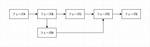
既存事業のエンジニアが考える「依頼されたものを開発するだけ」からの脱却について
6 Speee DEVELOPER BLOG
※この記事は、2024 Speee Advent Calendar4日目の記事です。 昨日の記事はこちら tech.speee.jp こんにちは。22卒エンジニアの長谷川と申します。現在は、デジタルトランスフォーメーション事業本部にてイエウールというサービスのアプリケーション開発業務とインフラ業務を担当しております。 この記事では、現在従事している既存事業の開発にて自分がよく陥いる「依頼されたものを開発するだけ」の状態からの脱却について試行錯誤していることを書いていきます。「エンジニアが事業貢献するって具体的にどういうことだろう」と疑問に感じている方に、1つのサンプルを提供できれば幸いです。 …
4日前
【令和最新版】カスタムCop 作成 ガイド Ruby 静的解析 RuboCop コードフォーマッタ Linter【AutoCorrect: contextual対応】 8 ANDPAD Tech Blog
はじめに こんにちは。姓は#LR_parser_gangs、名はydahです。最近は子が「となりのトトロ」にハマっており、毎日「となりのトトロ」がリビングで流れています。 全く飽きないのか、毎日のように「となりのトトロ観る〜？（意訳：となりのトトロが観たいのでリモコンを操作して欲しい）」と言い続け1ヶ月が経とうとしています。 これは ANDPAD Advent Calendar 2024 3日目の記事です。 今回はRubyKaigi 2024やKaigi on Rails 2024で秘蔵のesaとして配布した、RuboCopのカスタムCop作成のための資料を公開します。 カスタムCopの作成が…
6日前

asken UXデザイナー座談会：UXデザイナーの仕事の背景 8 asken テックブログ
asken テックブログ
はじめに こんにちは。テックブログ編集部の齋藤です。 askenエンジニアの座談会シリーズの番外編第二弾として、デザイナー座談会の模様をお届けします！UXデザイナー2名に加え、進行役として前回に引き続きPdMの伊藤さんにも参加いただきました。 この記事は、株式会社asken (あすけん) Advent Calendar 2024 の2日目の記事です。 参加メンバー 田仲 役職：UXデザイナー 所属：医療事業部 現在は事業部横断の行動変容プロジェクト*1 に携わっている。最近は、ディスカバリー・検証作業が主な仕事内容。前職ではアパレルのWeb業務を担当。UI設計からディレクション、マネジメントま…
6日前
Denoではじめる楽しいWeb開発 5 ちゅらデータ株式会社のフィード
概要この記事の対象者:Denoについて知りたい人。noejsの代わりの新しいフレームワークを探している人。この記事の内容:Denoの背景、特徴、インストール方法、およびDeno Deployを使用したウェブアプリケーションのデプロイ方法の解説している。この記事を読んでわかること:Denoを用いたディプロイ方法がわかる。 序説みなさん、web開発生活楽しんでますでしょうか？ご存知のように、Web開発の世界は常に進化し続けています。Node.jsの登場以来、JavaScriptバックエンド開発は大きく変わってきましたが、新たな選択肢として「Deno」が注目を集めてい...
4日前
エンジニアリングマネージャー1年目の開発チーム運営思想 5 SPIDERPLUS Tech Blog
SPIDERPLUS Tech Blog
長い間マネージメント職を敬遠していたのが今ではとても楽しくマネージャーとして仕事をしていることを踏まえて、開発チームの運営をする上で大切にしている価値観や考え方について綴っています。
4日前
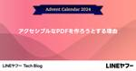
アクセシブルなPDFを作ろうとする理由 7LINEヤフー Tech Blog
LINEヤフー Advent Calendar 2024の記事です。Webアクセシビリティチーム中野です。プロダクトとウェブサイトにおける、アクセシビリティの向上と啓発を行っています。今年の...
6日前
LT（ライトニングトーク）に初めて登壇する人に贈る、準備から登壇までの心得 7 GMO Developers
LTとは LTとは「ライトニングトーク（Lightning Talks）」の略で、大体5〜7分くらいの短いプレゼンです。ただの短い「プレゼン」なのですが、テック界隈ではこれを「LT」と呼んでいます。 短いがゆえに、発表者 […]
6日前
Pull Request を止めないために #LayerXテックアドカレ 7 LayerX エンジニアブログ
この記事は、LayerX Tech Advent Calendar 2024 の 2 日目の記事です。 tech.layerx.co.jp こんにちは。 LayerX バクラク事業部 バクラクビジネスカード開発チームEMの高江（@shnjtk）です。 前回の私の記事では、私が所属するチームで策定したコードレビューガイドラインについてご紹介しました。 tech.layerx.co.jp 今回の記事では、チームとして Pull Request（以下PR）のレビューを円滑に行うために、どのような仕組みを導入しているかをご紹介します。 PR を止めてはいけない これはバクラクの開発を始めた当初から大事…
6日前
dbtでRedshiftのCOPY JOB (S3 auto copy) を管理したい。 4 KAYAC Engineers' Blog
この記事はdbt Advent Calendar 2024および、Kayac Group Advent Calender 2024の4日目の記事になります。 こんにちは、その他事業部SREチーム所属の@mashiikeです。 背景 2024/10/30にAWS からAmazon Redshiftの素晴らしいUpdateが発表されました。 aws.amazon.com 自動コピーを使用して Amazon S3 から Amazon Redshift へのデータ取り込みです。 Redshift では、COPY コマンドを使用してデータを Amazon S3 から 効率的にデータをロードできますが、 …
5日前
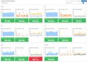
バクラクにおける可観測性向上の取り組み #LayerXテックアドカレ 4 LayerX エンジニアブログ
バクラク事業部 Platform Engineering 部 DevOps チームの uehara です。 LayerX Tech Advent Calendar 2024 の4日目となる本記事では、バクラクにおける可観測性向上の取り組みについて紹介します。 はじめに 2024年10月30日に行われたイベントで同じタイトルの発表をさせていただきました。 layerx.connpass.com speakerdeck.com 当日の発表では時間の関係で盛り込めなかった部分も含めて紹介します。 バクラクが抱えていた可観測性の課題 LayerX は コンパウンドスタートアップ として新しい事業やプロ…
5日前
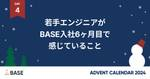
若手エンジニアがBASE入社6ヶ月目で感じていること 4 BASEプロダクトチームブログ
はじめに BASE BANKの出金Dev Group でエンジニアをしている池田聖示です。 2024/07に入社し、今月で6ヶ月目になりました。 今までどのような取り組みをしてきたのか、何を感じたのかなどを書きたいと思います。 自己紹介 妻と4歳の息子がいます。 エンジニア経験としては、大学時代の長期インターン1年と新卒で入社した企業で2年ほどの計3年、主にバックエンドエンジニア（タスクに応じてフロントエンドの開発なども行っていた）として働いていた状態で入社しました。 なので本ブログは、主にエンジニア経験年数の短いand子育てしている私にとってBASEがどのような環境かという視点で書いています…
5日前
暇だし過去15年間のサイバーセキュリティな大統領令を見る（~2017） 4 LayerX エンジニアブログ
LayerX Tech Advent Calendar 2024 の4日目の記事です。 LayerX Fintech事業部（三井物産デジタル・アセットマネジメント（MDM）に出向）で、セキュリティ、インフラ、情シス、ヘルプデスク、ガバナンス・コンプライアンスエンジニアリングなどを担当している @ken5scal です。 来年度1月より米国 大統領の新政権が始まりますね。 大統領の持つ特権の一つに、大統領令があります。 これは、法的な拘束力を持ち、議会の承認を得ずに実施することができる *1 権限です。 対象は様々な分野に及び、昨今?はサイバーセキュリティ（Cybersecurity）にも及びま…
5日前
脆弱性診断員に情報収集方法や活用方法を聞いてみた 6 ラック・セキュリティごった煮ブログ
ラック・セキュリティごった煮ブログ
デジタルペンテスト部のみやけです。Webアプリケーションの脆弱性診断員となって一余年、セキュリティのプロフェッショナルを名乗るために知見を広げたいと思う今日この頃。知見を広げるとなればやはり情報収集かと考えていたところ、昨年の就活イベントで就活生から「情報収集はどんなことをされていますか？」という質問をいただいたこと思い出しました。私自身も他の人の情報収集については気になりますし、それを今後どう活かしていけばいいのかを聞いてみたい。そこで、セキュリティについて知見を広げたい、これからセキュリティを学びたいと考えているみなさんの参考にもなればと、Webアプリケーションとプラットフォームの脆弱性診…
6日前
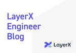
LayerX バクラク事業部における探索的テストへの取り組み #LayerXテックアドカレ 5 LayerX エンジニアブログ
この記事は、LayerX Tech Advent Calendar 2024 の 3 日目の記事です。 tech.layerx.co.jp こんにちは。 LayerX バクラク事業部 QAチームマネージャーの nao（@TestingGolem）です。 この記事では、私が所属するバクラク事業部での探索的テストの取り組みについてご紹介させていただきます。 イントロダクション ソフトウェア開発において、リリース前のバグ発見や品質向上のための仕様の改善に向けたテスト戦略の策定は昨今のプロダクト開発に不可欠です。LayerXでは、「探索的テスト（Exploratory Testing）」を活用し、チー…
6日前
Rails 8 を語る会を開催しました 5 ESM アジャイル事業部 開発者ブログ
ESM アジャイル事業部 開発者ブログ
こんにちは。福井で働く taiju です。 この記事は ESM Advent Calendar 2024 の 1 日目の記事です。 先日、アジャイル事業部内で「Rails 8 を語る会」というイベントを開催しました！Rails 8 の新機能や変更点について、みんなで知見を共有しながらディスカッションしたこのイベントは、学びも多く、盛り上がりました。この記事では、その内容をレポートします。 Rails 8 を語る会とは 2024 年 11 月 8 日、Rails 8 がリリースされました。今回のリリースでは、#NOBUILD、#NOPAAS という新たな標語が掲げられ、それに関連する機能が多数追…
6日前
Trivy DB に 優しい Github Actions を作成する 5 ANDPAD Tech Blog
お久しぶりです、ANDPADのtomtwinkleです。 この記事はANDPADアドベントカレンダー2日目の記事になります。 みなさん、Trivy 使ってますか？ Trivyとはコンテナイメージの脆弱性をチェック出来るツールです。 Golang の net/http 辺りは度々DoS脆弱性が見つかることがあり、それに早めに気づけて更新出来ているため、大変助かっております。 おや？ Trivy DB の様子が……？ そんなTrivyですが、数ヶ月前くらいからTrivy DBのダウンロードに失敗するケースが増えてきました。 OCI repository error: 1 error occurre…
7日前
perf の Python インタプリタを利用して KVM Exit/Entry のレイテンシを分析する 5 NTT Communications Engineers' Blog
この記事は、 NTT Communications Advent Calendar 2024 2 日目の記事です。 perf の Python インタプリタを使って KVM Exit/Entry のレイテンシを計測してみます。 はじめに KVM の仕組み CPU トレースを取得する perf をビルドする Python コードを書く 独自スクリプトを用いて perf.data を集計する まとめ 参考文献 はじめに こんにちは。 SDPF クラウド・仮想サーバーチームの杉浦 (@Kumassy_) です。 普段は OpenStack の開発・運用をしており、最近は仮想マシンの性能解析やトラブル…
7日前
次世代EC フロントエンドの開発効率を高めるツール紹介 3 GMO Developers
はじめに GMOメイクショップでは、ネットショップ構築SaaS「makeshop」を提供しています。私は、このサービスの管理画面をモダン化する「次世代ECプロジェクト」に携わっています。次世代ECでは フロントエンドにT […]
4日前
ゆっくりでいいんだよ人間だもの 〜 学びを続けるコツ 3 コネヒト開発者ブログ
こんにちは！コネヒト株式会社でエンジニアリングマネージャーをしているさとやんと言います。コネヒトの2024年アドベントカレンダーの記事のひとつとして、こちらの記事を書かせていただきました。 ここ数年マネジメントが中心で、現在エンジニアとして絶賛リハビリ中、学び直し中の私が自学をどう続けているかについてお話しします。 この記事では効率的な学び方ではなくて、如何に「続けている」かを紹介していきます。 書こうと思った背景 先に告白としておくと私は何もしなくて熱心に勉強できるタイプの人間ではありません。学生の時も勉強自体が義務の様なもので、テストや進級で必要に迫られるから勉強するというタイプでしたし、…
4日前
【Next.js】Next/Imageの画像プレビューにて発生したメモリリークを追う 3 PLEX Product Team Blog
PLEX Product Team Blog
Next.jsの「Next/Image」を利用した画像プレビュー機能で発生するSafariブラウザのクラッシュ問題について、メモリリークの実態や発生する原因をXcodeとSafari Web Inspectorを駆使して深掘った調査記事です。
4日前

サーバーサイド Kotlin における技術選択 3 Money Forward Developers Blog
Money Forward Developers Blog
この記事は、Money Forward Engineering Advent Calendar 2024 12/4 の投稿です。 12/3 は VTRyo さんで SRE Kaigi 2025に 「一人から始めたSREチーム3年間の歩み -求められるスキルの変化とチームのあり方-」で登壇します でした。 adventar.org こんにちは、マネーフォワードでバックエンドエンジニアをしている @hktechno です。 現在、マネーフォワードでは、バックエンド開発においてこれまでの Ruby on Rails に加えて、サーバーサイド Kotlin の導入を推進しています。 私は現在、これから…
4日前
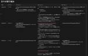
毎週1時間のペアプロとYWT形式で進める技術改善の1ヶ月間の取り組み 3 コネヒト開発者ブログ
コネヒトアドベントカレンダー2024の4日目の記事です。 はじめに コネヒトには、技術的な負債の解消や技術的にチャレンジングな取り組みを推進するための組織目標という目標制度があります。これに基づき、私たちのAndroidチームでは現在、Jetpack ComposeにおけるNavigation（以下Navigation Compose）のプロダクション導入を目指して活動しています。 Androidチームは2名体制の小さなチームですが、毎週1時間のペアプロを通じて、技術的な課題に取り組んでいます。このペアプロに加え、YWT形式を活用した取り組みを組み合わせることで、限られた時間で、継続的に改善と…
4日前
protobuf.dev の Proto Best Practices を読んで 3 ANDPAD Tech Blog
この記事はANDPAD Advent Calendar 2024の 4 日目の記事です。 メリークリスマス🎄 バックエンドエンジニアの武山 (bushiyama) です。 現在はANDPAD請求管理のバックエンドを担当しています。 なんの記事 protobuf 公式の Proto Best Practices ドキュメントを、私が理解しやすいように要約したものです。 protobuf.dev なぜ読んだか・書いたか 弊社の API 定義は Protocol Buffers を利用することが多いです。 このレビューにおいてレビュアーとレビューイが共通の判断基準を持つことは、 コードの品質向上、チ…
5日前
2024年の技術広報取り組み成果発表！ 3 株式会社ココナラさんのフィード
こんにちは！株式会社ココナラのHead of Informationの ゆーた（@yuta_k0911）です。技術広報 Advent Calendar 2024 シリーズ1 4日目の記事です。また、株式会社ココナラ Advent Calendar 2024 4日目の記事も兼ねています！良かったら弊社のアドベントカレンダーもご覧ください。ココナラでは2022年から本格的に技術広報活動に取り組み始めました。2024年の振り返りとして、本記事を書きます。 2023年の技術広報活動まずは技術広報活動を始める前（だいたい2021年ごろ）の状況をご紹介します。一言でいうと、何...
5日前

PlaywrightでE2Eテストを書いてみる 3 iimon TECH BLOG
はじめに、株式会社iimonでエンジニアをしている須藤です。 最近フロントエンドを触る機会が多く、E2Eテストについて気になっていたので、 今回はPlaywrightでE2Eテストを書いてみようかと思います。 本記事はiimonアドベントカレンダー4日目の記事となります。 E2E(End to End) Testとは メリット デメリット Playwright概要 初期設定 テストを自動生成 テストの実行 エラーの挙動を確認 テスト内容の追加 HTMLレポートを確認してみる Chrome拡張機能のテスト まとめ 参考 募集 E2E(End to End) Testとは エンドユーザーの視点で、…
5日前
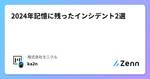
2024年記憶に残ったインシデント2選 3 株式会社モニクルのフィード
こんにちは、モニクルでエンジニアリングマネージャーをやっているka2nです。この記事は モニクル Advent Calendar 2024の4日目の記事です。 昨日は、@sugoi-wadaの 禅と暮らす一週間。一日一食断食と仏教体験レポート 準備編 2024 年秋 - wada-blog でした。 修行と言えば私もやったことがあります。またやりたいな。https://scrapbox.io/wada-blog/禅と暮らす一週間。一日一食断食と仏教体験レポート_準備編_2024年秋 はじめにモニクルでは、マネイロ をはじめ、「金融の専門知識がなくても、正しい意思決定ができる人を...
5日前
WordPressのフックを理解し「アップデートしたらサイトが壊れる」プラグインを作る 4 GMO Developers
アップデートしたらサイトが壊れるプラグイン 今回実装したプラグインはこちらです。https://github.com/kinosuke01/wp-update-breaker これをWordPress製のサイトにインスト […]
5日前
Raspberry Pi Picoの開発環境がいい感じになってる！ 4 ヘッドウォータースのフィード
いつの間にか、VSCode extensionを入れるだけで環境構築ができるようになっていました！特にWindowsについては No dependencies needed とあり、本当にこのextensionのみで環境構築が可能です。（手元のWindows環境でも確認できました！）Linuxについては、以下の依存を事前インストールする必要があります。sudo apt install python3 git tar build-essential環境構築後はGUIをポチポチするだけでプロジェクトを作成できました。プロジェクト内の.vcodeフォルダにlaunch.jsonなど...
5日前
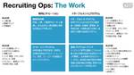
採用オペレーションを考えていたらアトラクトの話になった 4 Speee DEVELOPER BLOG
※この記事は2024 Speee Advent Calendar 3日目の記事です。 昨日の記事はこちら tech.speee.jp はじめに 株式会社Speee 中途採用部オペレーション企画推進グループの岡野谷（@okanoya）です。自分の現在位置を確かめるべく「私たちが何をし、何を目指しているのか」を書き留めておこうと思っています。よろしくお願いいたします。 ものすごい面接体験をした いきなりの告白です。私は4年前、Speeeの面接で圧倒的に惹きつけられました。2時間弱の面接で「こんなに会話が面白いのはなぜだ？」という懐疑の気持ちと「もっと話を聞きたい」という惜別の気持ちが入り交じってい…
5日前
copilot-instructions.mdは使えるぞ！実戦投入レポート 4 JX通信社エンジニアブログ
こんにちは、JX通信社でシニアエンジニアをしているSirosuzumeです。 先日、GitHub Copilotの新機能として、リポジトリのルートから.github/copilot-instructions.mdを読み込み、対話型UIの出力に反映する機能が追加されました。 この機能を使ってみて、どのような効果があるのか、どのように活用するのが良いのか、実際に新しく立ち上がったプロジェクトで試してみた結果を共有したいと思います。 copilot-instructions.mdの効果の検証 まずは実例を見てみましょう。 src/feature/entry-horse/presentational/…
6日前
フルリモート主体組織でのオフラインコミュニケーションの実情 4 TechRacho
TechRacho
morimorihogeです。もう12月かという気持ちです。11月あっという間だったので師走はもっと早いのか💦 今年もTechRachoではBPS株式会社のメンバーとご一緒に仕事させて頂いている近しい皆さまの参加するアドベントカレンダー記事を投稿していきます。 普段記事執筆する機会が無い人にも年に1-2回くらいはアウトプットしてもらう機会を作ろうという企画ですので、いつもと少し違うTechRachoをお楽しみください。 アドベントカレンダー初日ということで、僕からは社内でのオフラインコミュニケーションについて書いてみたいと思います。 弊社のリモートワークの現状 リモートワークを導入している会社数も減っていると聞き […]The post フルリモート主体組織でのオフラインコミュニケーションの実情 first appeared on TechRacho.
6日前
個人アプリ開発で課金がかさむ設計になっていた話 4 ABEJA Tech Blog
突然の通知 なぜ気付けなかったのか？ 応急対応：まずは火を消す このアプリでのGoogle Places Detail APIの呼び出し方法 アプリの価値を見つめ直す 写真アップロードを促す仕掛け アプリを広めるのは簡単じゃない まだ、課題が… We Are Hiring! インターンシップ生としてABEJAで活動している和田です。こちらは、ABEJAアドベントカレンダー2024の2日目の記事です。 大学院で研究やインターンをこなす傍ら、同級生3人と自分たちのレベルアップのため「気分や好きな場所に合わせて、お出かけを提案するアプリ」の開発に取り組んでいます。 今回は、そんな私たちが直面した 高…
7日前
パーサーコンビネータを世界一深く理解できるかも知れない解説 - 第1回 3 kubell Creator's Note
kubell Creator's Note
こんにちは、最近はチーフプロダクトオーナー兼アーキテクトをしている @awekuit (赤津) です。 この記事は kubell Advent Calendar 2024(シリーズ1)の3日めの記事です。2日めは奥澤さんのNANDからCPUを作る（前編）でした。 さて、僕は最近業務でコードを書く機会は減りましたが以前メッセージ記法という Chatwork 独自記法のパーサーの刷新を担当しまして、Scala, Scala.js, Kotlin, Swift などでメッセージ記法パーサーを作ったり、パーサーコンビネータライブラリ自体を作ったりしました。 その時得た知見をどこかで発信したいと思いなが…
5日前
QAエンジニアが音声合成の差分を自動検知する仕組みを導入したはなし 3 IVRyテックブログのフィード
!本記事はIVRy Advent Calendar 2024 紅組の3日目の記事です。白組は、otsukyさんの「JSConf JP初スポンサーとして参加しました！」を公開しています！ぜひ読んでください。4日目は、コーポレートITのendoさんの「会社のセキュリティを向上させるなら従業員体験も向上させようぜというお話」が公開予定です。お楽しみに！こんにちは。電話AI SaaS IVRyのQAエンジニアの関( @IvryQa )です。アドベントカレンダーの3日目を担当します。IVRyの自動応答機能では、Text-to-Speech（TTS）という音声合成を使用しています。...
5日前
ITエンジニアとプロティアン・キャリア 3 LIVESENSE ENGINEER BLOG
これは Livesense Advent Calendar 2024 DAY 3 の記事です。 はじめに キャリアについての研究 プロティアン・キャリアの紹介 その前の世代とは何が違うのか？ 関係性アプローチについて 新しいキャリアにおける闇 その他の印象的な内容 まとめ はじめに こんにちは。転職ドラフトで今年は主に言語とかライブラリのアップデート作業をしていたiwtnです。 他にも色々と仕事はしていたのですが、転職ドラフトというプロダクトを理解していくために、キャリアというものの知識を得た年でもありました。 そういえば、去年もキャリアに関する記事を書いていました。 made.livesen…
6日前
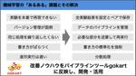
MLOpsの「あるある」課題の解決と、そのためのライブラリgokart 3 エムスリーテックブログ
こちらはエムスリー Advent Calendar 2024 2日目の記事です。 こんにちは、AI・機械学習チームの池嶋（@mski_iksm）です。 近年、機械学習は多くのアプリケーションで当たり前のように使われるツールになりつつあります。ですが機械学習は、ライブラリを呼び出すだけで簡単に使える、というわけにはいかない特有の難しさもありますよね。 例えば、モデルの学習実験を試行錯誤しながら何度も繰り返しているうちに、「どのデータを使い、どんな設定で学習させたモデルが一番良かったのか分からなくなった」という経験はないでしょうか。 また、本番環境で使用するモデルが実験環境で作ったものを再現できず…
6日前
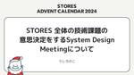
STORES全体の技術課題の意思決定をするSystem Design Meetingについて 3 STORES Product Blog
STORES Product Blog
こんにちは、うしろのこです。STORES アドベントカレンダーの1日目ということで、本当は別の内容を書く予定だったんですがリリースの都合などもあり、今回は STORES における System Design Meeting という会議体について書こうと思います。 System Design Meeting とは System Design Meeting は、STORES 全体に関わるような技術的な課題について議論し、意思決定をする場です。ミーティングのオーナーはCTOが担当し、基本的には持ち込みで技術課題を共有して全体の方針決めから実行までの合意を取ることになります。 誰でも参加可能かつ誰で…
6日前
monorepoにESLintのFlat Configを導入した 3 chot Inc. tech blogのフィード
先日、業務で開発しているmonorepoのESLintをv9にアップデートして設定ファイルをFlat Configに変更しました。自分自身はmonorepoにFlat Configを導入するのが初めてでした。色々調べた結果、学びがあったりきれいにまとまった設定ファイルが作れたと感じたので共有します。Flat Config自体は目新しいものではなくなってきているので、細かい使い方は他の記事や公式ドキュメントを御覧ください。 設定ファイル完成形my-monorepoは各自のプロジェクト名に、some-workspaceは個別のワークスペース名に置き換えてください。eslint....
7日前
JavaScriptのシャローコピーとディープコピー詳細解説：実践的な使い方と注意点 3 iimon TECH BLOG
はじめに シャローコピーとディープコピーの基礎 オブジェクトの参照の仕組み シャローコピーとディープコピーの違い シャローコピーの3つの方法 それぞれの特徴 Object.assign()が配列に適さない理由 疎配列（sparse array）の扱い 配列メソッドの継承問題 使い分けの指針 ディープコピー ディープコピーの4つの方法 使い分けの指針 注意点とベストプラクティス シャローコピーで十分な場合 ディープコピーが必要な場合 まとめ おわりに 参考記事 はじめに こんにちは、株式会社iimonでフロントエンドエンジニアをしているnkmです！ 本記事はiimonアドベントカレンダー2日目の…
7日前